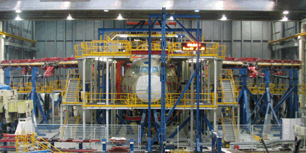
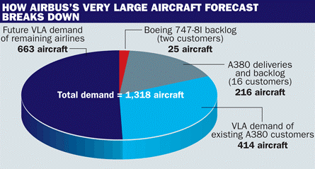
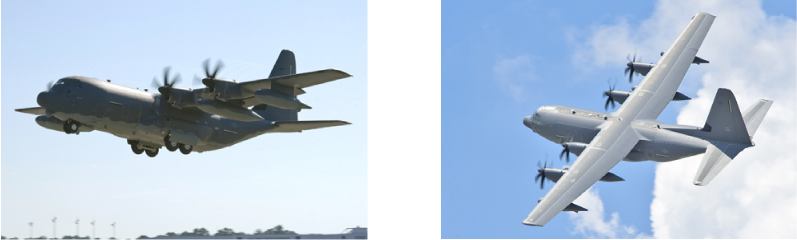
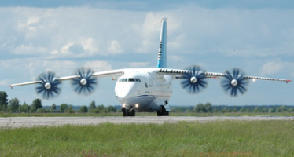

Aviation Industry & Aircraft News...
Airbus A400M passes ultimate wing load test
Airbus Military has conducted the ultimate load test on the A400M's all-composite wing, subjecting the design to 150% of the maximum bending load expected to be encountered during the type's operational life.
Conducted late last month using a static test aircraft at Getafe near Madrid, the test culminated with the aircraft's wingtips being moved upwards by 1.41m (4.6ft), Airbus says.
The work was observed by two representatives from the European Aviation Safety Agency, the body responsible for approving the military transport's civil certification before it can enter service from late 2012.

"We are all delighted to have passed this key milestone in the structural test programme, which further confirms the soundness of the A400M design," says senior vice-president A400M chief engineer Alain Cassier.
The static test programme at Getafe is scheduled to conclude in mid-2011, while full-scale fatigue tests using another airframe will be launched later this year in Dresden, Germany.
Separately, Airbus says preliminary work to assess the A400M's ability to manoeuvre under rough field conditions was also successful.
Conducted late last month at a former military airfield near Toulouse, France, the work involved one of the programme's development aircraft performing fast taxi trials with chalk pellets scattered on the ground.
An A400M should make the type's first landing on an unpaved runway before the end of the year.
Airbus and Boeing cross swords again on very large aircraft market forecast

Boeing's new "fragmentor", the 787, came face to face for the first time with Airbus's superjumbo in the static park at Farnborough. But while the two rivals' noses were no more than 100m apart, the gulf between two airframers' view of market demand for very large aircraft remains as huge as ever.
In its latest long-term market forecast, issued just ahead of the Farnborough show, Boeing has raised its overall delivery forecast significantly. However, it remains relatively downbeat on demand in the 400-seat-plus sector - where the 747-8 competes with the larger A380 - which it sees as flat.
Here, Boeing's latest forecast has declined slightly from 740 deliveries in its 2009 commercial market outlook to 720 (including around 500 passenger aircraft and 220 freighters), which is less than half of the 1,729 aircraft market predicted by Airbus in its latest 20-year forecast. Of these, Airbus expects 1,318 will be passenger aircraft and the remaining 411 will be freighters.
There has been a growing expanse between the two airframers' forecast for very large aircraft (above the 400-seat 747-400 category), with Airbus having consistently been extremely bullish and repeatedly putting demand well in excess of 1,200 units.
Tinseth thinks that even on Boeing's reckoning, A380 sales have "underperformed" and the double-decker will need "a paradigm shift in the marketplace" for demand to start matching the forecast.
However, Airbus's A380 marketing chief Richard Carcaillet thinks Tinseth has used some "very, very bad arithmetic" to reach this conclusion: "If you read our Global Market Forecast [GMF] carefully you will see that Airbus always forecasts demand for aircraft, not deliveries specific to any given aircraft type," he says.
"This is pure demand for a generic large aircraft and we say - as always - that we'd like to capture at least half of that. So when we say 1,300 passenger aircraft, that means we'd be pleased with at least 650 over 20 years, although I think we'll get more than that because the A380 today has nearly 90% of the market."
Carcaillet adds that as well as the A380 and the 470-seat 747-8I, that large aircraft category, as defined by Airbus, could also include densely configured A340-600s or 777-300ERs.
Of the 1,318 very large passenger aircraft deliveries forecast by Airbus over the next 20 years, Carcaillet can already account for around half (see graphic). There were 241 A380s and 747-8Is on order at the time of Airbus's 2009 GMF, and the airframer forecasts demand for a further 414 very large aircraft from the 16 airline customers who have already bought A380s. "Hopefully, these additional aircraft will be A380s, but maybe not only," he says. "The rest of the open demand - 633 aircraft - is from airlines that are not A380 customers today - for example Cathay Pacific, Japan Airlines and others."
Carcaillet reiterates that Airbus's eventual aim is to build four A380s a month, but says that even at that rate - which would equate to a maximum of 48 a year - that would only make 480 deliveries in 10 years. "So [Tinseth's] '1,000 A380 deliveries [in 10 years]' is out of this world, but we are talking about demand in that category, not A380 deliveries," he says.
First flight for USAF's HC-130J
Lockheed Martin has performed the first flight with a new version of its C-130J tactical transport in development for the US Air Force.
Flown from the company’s Marietta site in Georgia July, the HC-130J is configured as a combat tanker for use in support of personnel recovery missions.
The first example is on track to be delivered to the USAF’s Air Combat Command organisation next month, says Lockheed.

The new J-model variant should achieve initial operational capability during 2012. It will replace some of the air force’s legacy HC-130s, 34 of which are now flown in the N and P production standards, as listed in Flightglobal’s MiliCAS database.
Antonov: Ukraine to receive first An-70 next year
Ukraine's air force should take delivery of its first Antonov An-70 next year, with the tactical transport undergoing flight-testing in an upgraded configuration.
Kiev is expected to receive an initial batch of two production standard An-70s, which Antonov says should be handed over in 2011 and 2012, respectively.
Recent trials activities using the company's lone prototype aircraft have included delivering armed paratroops from various speeds, plus assessing emegency and safety procedures, including ground egress.
Propulsion system suppliers Ivchenko-Progress and Motor Sich have "completed stand tests of the D-27 engines with upgraded propfans and control systems", Antonov says.

Work to upgrade the An-70's electronics equipment is ongoing, with the aircraft to gain new cockpit displays and a fully digital flight control system. The modernisation effort is a key element of bringing the transport into production, as the aircraft was first flown in December 1994.
Antonov says the joint Russian/Ukrainian test programme on the new-standard aircraft is due to conclude in 2012. The An-70 has a payload capacity of 47t, and a range of more than 1,620nm (3,000km) when carrying a 20t cargo
In addition to the interest shown by the Ukrainian and Russian militaries, cargo specialist Volga-Dnepr has also recently signed a memorandum of understanding to acquire up to five commercial-standard An-70Ts.
Separately, Antonov is continuing to work on a new medium transport design dubbed the An-178. To be developed from the company's An-158 regional airliner, the twin-turbofan design should have a range of 650nm with a maximum 15t payload, and a cruise speed of 446kt (825km/h).
EADS six-month income halved by rise in R&D spend and changing exchange and hedge rates
EADS's net income halved in the first six months of 2010, dropping to €185 million ($245 million) from €378 million in the same period of 2009, despite revenues remaining stable to total €20.3 billion, compared with €20.2 billion a year ago.
The Airbus Commercial division's earnings plummeted by two-thirds to €241 million - reflecting currency effects and investment in the A350 XWB - while its revenues dropped by 2% to €13 billion and deliveries by four units to 250.
Increasing tankers business and medium and light transport aircraft deliveries drove Airbus Military's revenues up by 18%, to just over €1 billion, but currency effects on the A400M provision, combined with "an under-recovery of fixed costs" on that programme, rendered divisional earnings negative to the tune of €161 million. A year ago, the negative figure was €218 million.
Helicopter division Eurocopter boosted its revenues by 11% to €2.1 billion, as its deliveries rose 13 units to 249. However, its earnings dropped from €99 million to €71 million, affected by a restructuring charge related to the implementation of a cost-cutting program, a charge and margin adjustment pertaining to the NH90, and higher product investment.
Astrium earnings were up 7% at €106 million, although revenues declined 4% to €2.1 billion, with EADS citing a one-time "catch-up effect" that boosted the 2009 figure. Defence & Security's revenues were stable at €2.2 billion, although R&D spending narrowed earnings by 23% to €110 million.
EADS's other businesses generated revenues of €554 million, but zero earnings, with negative currency effects suffered by regional aircraft manufacturer ATR largely responsible for erasing the €2 million earnings generated a year ago. However, ATR's deliveries rose by six units to 27.
The group's overall net cash position declined to €8.9 billion from €9.8 billion, reflecting a contribution to pension funds and free cash outflow of €737 million - including €270 million of customer financing, forecast to total €600 million this year.
EADS expects annual earnings to total €1 billion in 2010, compared with a negative figure of €322 million in 2009. Airbus deliveries are forecast to be similar to those of 2009, totalling "around 500" compared with 498, with Eurocopter's deliveries "slightly below" the 2009 figure of 558 units.